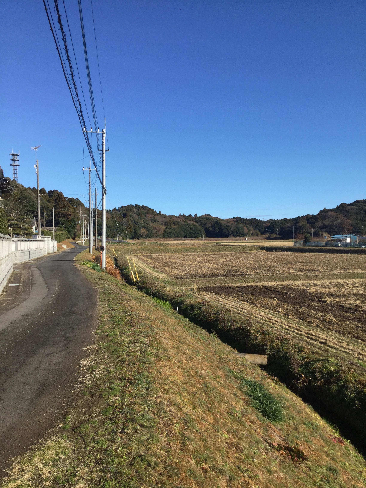

Kashima, Japan. A city in the Ibaraki Prefecture. That is where my grandmother lives. Where my mother is from. I have been visiting almost every year since I was born, and it feels like a sort of second home. Most of my trips there have been about a month long, and during summer breaks. My most recent trip however, was in the winter of 2024. I spent the entirety of winter break there, and plan to do the same this winter break. Since Japan is an island country, it can get extremely hot and humid during the summer months, making it difficult to be outside for extended periods of time. In the winter, this is not an issue at all, which is nice. Unlike winter in Michigan, which is usually unbearably cold and cloudy most days, winter in Japan looks more like sunny days and temperatures in the 40s. This only applies to the Tokyo area and Kashima though, as the northernmost region of Japan, Hokkaido, receives heavy snowfall and freezing temperatures during the winter. In recent years, going to Japan for vacation has become a sort of trend, which I have mixed feelings about. On one hand, it’s great that so many people are interested in the country and culture, and it's helping the Japanese economy a lot. However, many places in Japan are dealing with overtourism, as it is a small country. It’s strange to me because the country is simply where my family on my mother’s side lives, and I have been visiting my whole life for that reason, and I don’t understand why the country became a trend. It's disheartening sometimes to hear people talk about the country like it’s an amusement park. Below is a picture of the area near my grandmother's house.
Monoracism refers to the discrimination against people who are two or more races by people who are one race. Growing up white and Asian, I experienced a lot of microaggressions. Usually people who are not Asian, assume that I am fully accepted by the Asian community and can visit Asian countries and fit right in. However, this is not the case. When visiting Japan, I am usually not treated as Japanese by the locals, and usually people don’t think I’m Japanese. I tend to get the same treatment that most non-Japanese foreigners do. In a homogenous country, it’s clear to the residents of that country when someone is different from them. I have also struggled fitting into the Asian community in the United States. Growing up, the friend groups involving exclusively East Asian people would talk to me and tolerate me in class but I would never be invited to their exclusive hangouts. I would also be criticized for speaking about racial issues concerning Asian people, because “I’m white,” and my experiences of racism would often be dismissed or not taken seriously at all. Some monoracial Asian people I have encountered seem to believe that because I am half white, I experience white privilege at the same level as monoracial white people, but this has not been the case at all in my experience. I am often treated the same as monoracial Asian people when I am in the United States, and have experienced a lot of racism for being Asian, yet people seem to have a hard time believing me. This would be the concept of being non white-passing. I’m not trying to say that everyone views me in a negative light, I am simply speaking from my personal experiences. I grew up in Novi, where there is a proportionally large number of Asian people for a city in Michigan, so it’s possible that I experienced a proportionally large amount of monoracism from Asian people. I hope to bring some attention to the problem of monoracism. While I might not be taken seriously today, there will only be more multiracial people as time goes on, and this issue will be talked about more and more.